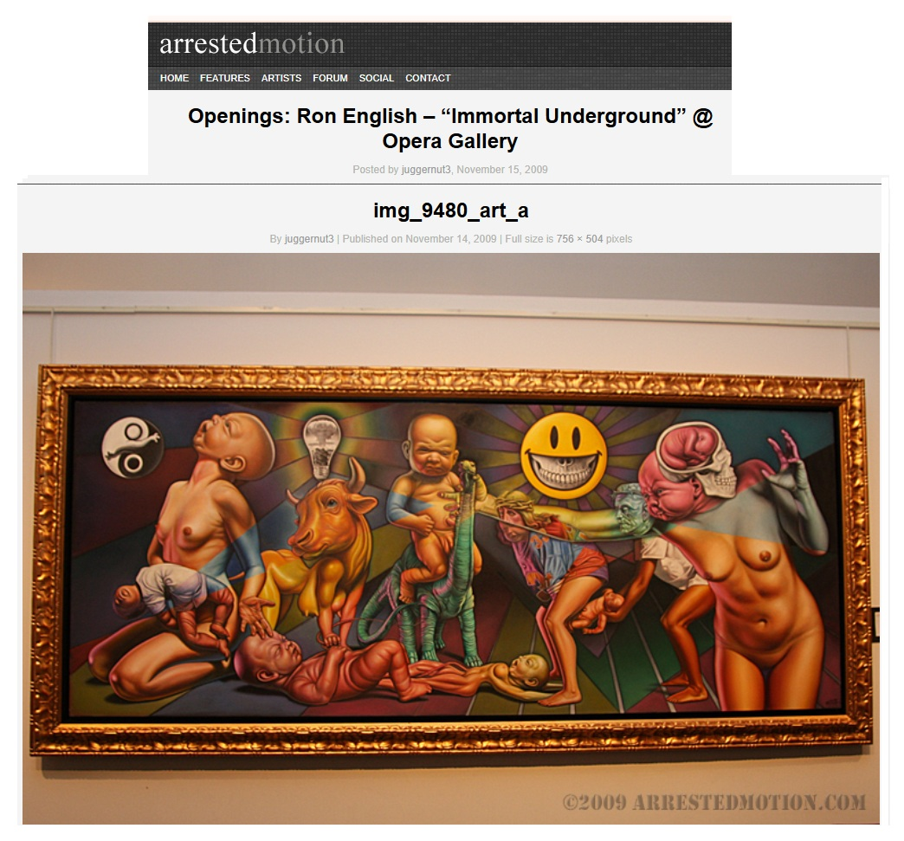
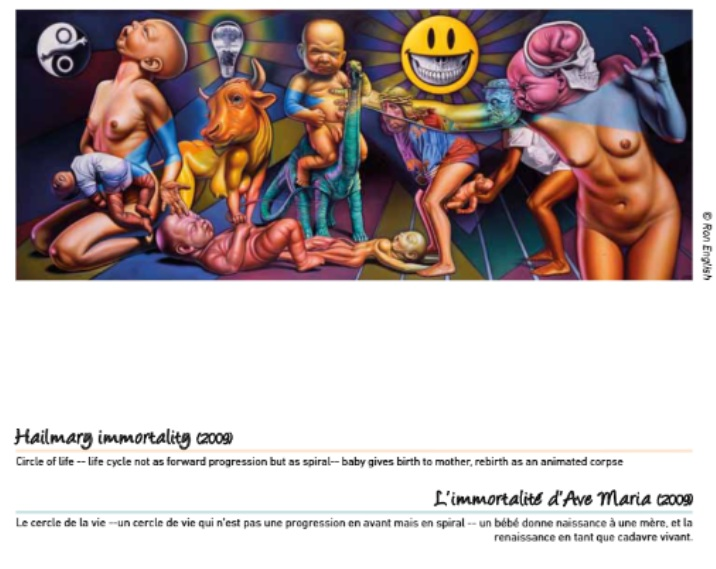

Exhibitions
Immortal Underground, Opera Gallery, New York, New York, US, November 12–December 2, 2009.
Reimagining “Guernica” / La réinvention du “Guernica”, Museo de la Paz de Gernika, Gernika-Lumo, Bizkaia, Spain, April 4–December 10, 2017. The composition was presented as a print on stretched canvas, not as the original painting.
Literature
Ron English, Status Factory: The Art of Ron English (San Francisco: Last Gasp of San Francisco, 2014), p. 8. ISBN 978-0867197891.
Ron English, Death and the Eternal Forever (Korero Press, 2014), p. 153. ISBN 978-0957664920.
Ron English, Original Grin: The Art of Ron English (Paris: Cernunnos, 2019), p. 216. ISBN 978-2374950938.
Museo de la Paz de Gernika, Reimagining “Guernica” / La réinvention du “Guernica” (Gernika-Lumo: Museo de la Paz de Gernika, 2017), digital exhibition catalogue / flip-book.
Notes
This work references Pablo Picasso’s Guernica.
In the Museo de la Paz de Gernika’s 2017 Reimagining “Guernica” / La réinvention du “Guernica” exhibition, this composition was shown as a print on stretched canvas rather than as the original 2009 painting.
Ancillary Documentation



Selected Online Circulation
Selected examples of the work’s online circulation, reproduction, or discussion. This list is not exhaustive; it is intended to document representative appearances of the image beyond formal exhibition and publication records.